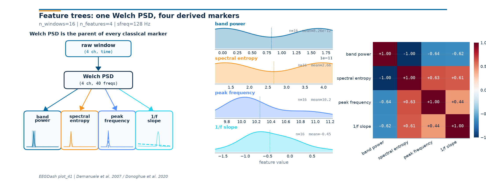

Note
Go to the end to download the full example code or to run this example in your browser via Binder.
Compose EEG markers from Welch PSD#
Difficulty 1-2 | Runtime: 5s | Compute: CPU
Welch’s method [Welch, 1967] returns one power spectrum per window; band
power, spectral entropy, peak frequency, and the 1/f slope (Demanuele
et al. 2007; Donoghue et al. 2020) are four scalars derived from that
same spectrum. If a feature dictionary asks for four band powers as
four independent features, the FFT runs four times per window. The
FeatureExtractor dependency tree shares one
spectral_preprocessor across every spectral feature so the FFT runs
once. The deliverable for this tutorial is one feature table with the
four derived columns, plus a three-panel figure that names the
hierarchy, shows each feature’s distribution, and prints the 4x4
Pearson correlation between them.
Live data come from the same 1-40 Hz FIR-filtered windows used in Extract band-power features to keep the tutorial self-contained and offline-runnable, with the same HBN resting-state ds005514 recipe served through NEMAR [Delorme et al., 2022] and the BIDS conventions of Pernet et al. (2019); for clinical EEG good-practice on band selection see Cisotto and Chicco (2024).
So if alpha-, beta-, theta-, and delta-band powers each call Welch
separately, how many PSDs run per batch, and what does sharing one
spectral_preprocessor change?
Keywords: features, spectral, trees
Learning objectives#
Identify when independent feature definitions cause repeated PSD work.
Build a shared
spectral_preprocessorand hang four derived features off it (band power, spectral entropy, peak frequency, 1/f slope).Read the dependency tree printed by
FeatureExtractor.Compute the wall-time speedup from sharing one PSD versus N.
Implement a custom decorated feature on the same shared PSD.
Requirements#
About 5 s on CPU. No GPU. No network.
Prerequisites: Preprocess EEG and create windows, Extract band-power features.
Concept: Features vs. deep learning.
Setup. np.random.seed makes the synthetic recordings reproducible
(E3.21). One global Welch counter lets us prove the shared-PSD claim
at runtime; the counter is reset to the original Welch in a try/finally
so subsequent tutorials in the same sphinx-gallery process see a clean
_spec.welch [Gramfort et al., 2013].
import time
from functools import partial
import matplotlib.pyplot as plt
import mne
import numpy as np
import pandas as pd
from braindecode.datasets import BaseConcatDataset, RawDataset
from braindecode.preprocessing import create_fixed_length_windows
import eegdash
from eegdash.features import (
FeatureExtractor,
extract_features,
feature_predecessor,
spectral_bands_power,
spectral_db_preprocessor,
spectral_entropy,
spectral_normalized_preprocessor,
spectral_preprocessor,
spectral_slope,
univariate_feature,
)
from eegdash.features.feature_bank import spectral as _spec
from eegdash.viz import use_eegdash_style
use_eegdash_style()
np.random.seed(42)
print(f"eegdash {eegdash.__version__}")
PSD_CALLS, _TAG, _orig_welch = {"flat": 0, "tree": 0}, {"value": "tree"}, _spec.welch
def _counting_welch(*a, **k):
"""Wrap :func:`scipy.signal.welch` to count invocations per run."""
PSD_CALLS[_TAG["value"]] = PSD_CALLS[_TAG["value"]] + 1
return _orig_welch(*a, **k)
_spec.welch = _counting_welch
eegdash 0.8.0
Mental model: PSD is the parent of every classical EEG marker#
Welch’s PSD takes one window of shape (n_channels, n_times) and
returns a power spectrum of shape (n_channels, n_freqs). Every
classical resting-state marker is one or two lines of NumPy applied
to that spectrum:
raw window -> Welch PSD -> band power
spectral entropy
peak frequency
1/f slope
Two consequences land immediately. First, if four features each
rebuild the same PSD, the FFT runs four times instead of once.
Second, the four features read different views of the spectrum (raw
power for band integrals, normalised power for entropy, log power
for the 1/f fit). A shared spectral_preprocessor plus
feature_predecessor()-tagged consumers solve
both at once.
Validate your result#
Dependency Tree. The printed extractor tree should show exactly ONE root
spectral_preprocessorshared by all band-power features.Feature Count. The resulting table should have
n_channels * 4columns (theta, alpha, beta, gamma).Correlation Matrix. Band-power features from the same channel should show some degree of positive correlation.
%% [markdown]
Step 1: Build a small windowed dataset
————————————–
Two 16 s recordings at 128 Hz on a 4-channel parieto-occipital
montage. Eyes-closed gets a 10 Hz alpha sine on top of the noise
floor; eyes-open does not. The non-causal 1-40 Hz FIR band-pass
writes info["highpass"] and info["lowpass"] so that the
downstream spectral_preprocessor can read them when picking the
integration window. Synthetic data keep the tutorial offline; the
same code path runs on real ds005514 windows from
Preprocess EEG and create windows.
SFREQ, CH_NAMES, WIN = 128, ["O1", "Oz", "O2", "Cz"], int(2.0 * 128)
def _make_raw(eyes_open: bool, seed: int) -> mne.io.Raw:
"""Build a synthetic 16 s ``Raw`` with optional 10 Hz alpha sine."""
n = SFREQ * 16
data = np.random.default_rng(seed).standard_normal((len(CH_NAMES), n)) * 1e-6
if not eyes_open:
data += 4e-6 * np.sin(2 * np.pi * 10.0 * np.arange(n) / SFREQ)
raw = mne.io.RawArray(
data, mne.create_info(CH_NAMES, SFREQ, ch_types="eeg"), verbose="ERROR"
)
raw.filter(l_freq=1.0, h_freq=40.0, verbose="ERROR")
return raw
datasets = BaseConcatDataset(
[
RawDataset(
_make_raw(True, 42),
target_name="target",
description={"subject": "s1", "condition": "eyes_open", "target": 0},
),
RawDataset(
_make_raw(False, 7),
target_name="target",
description={"subject": "s2", "condition": "eyes_closed", "target": 1},
),
]
)
windows = create_fixed_length_windows(
datasets,
start_offset_samples=0,
stop_offset_samples=None,
window_size_samples=WIN,
window_stride_samples=WIN,
drop_last_window=True,
preload=True,
)
n_windows = sum(len(d) for d in windows.datasets)
pd.Series(
{
"n_recordings": 2,
"n_windows": n_windows,
"n_channels": len(CH_NAMES),
"sfreq (Hz)": SFREQ,
"window_samples": WIN,
},
name="value",
).to_frame()
Step 2: Predict (PRIMM)#
Predict. Four band-power features built as four independent
extractors each call Welch separately, so the FFT runs four times per
batch. With one shared spectral_preprocessor the count should
drop to one per batch. Predict the speedup before running.
Step 3: Run #1, without the tree#
Run. Each band gets its own top-level
FeatureExtractor with its own
spectral_preprocessor. The FFT runs once per band per batch; the
Welch counter records the redundant calls.
BANDS = {"delta": (1, 4.5), "theta": (4.5, 8), "alpha": (8, 12), "beta": (12, 30)}
def _band_pow(name, lim):
"""Return a ``spectral_bands_power`` partial for one named band."""
return partial(spectral_bands_power, bands={name: lim})
def _psd_pre():
"""Return a ``spectral_preprocessor`` partial with a 2 s segment."""
return partial(
spectral_preprocessor,
fs=SFREQ,
nperseg=int(2.0 * SFREQ),
f_min=1.0,
f_max=40.5,
)
flat_features = {
n: FeatureExtractor({f"{n}_pow": _band_pow(n, lim)}, preprocessor=_psd_pre())
for n, lim in BANDS.items()
}
PSD_CALLS["flat"], _TAG["value"] = 0, "flat"
t0 = time.perf_counter()
flat_table = extract_features(
windows, flat_features, batch_size=64, n_jobs=1
).to_dataframe(include_target=True)
runtime_flat = time.perf_counter() - t0
psds_flat = PSD_CALLS["flat"]
Extracting features: 0%| | 0/2 [00:00<?, ?it/s]
Extracting features: 100%|██████████| 2/2 [00:00<00:00, 267.21it/s]
Step 4: Investigate the flat run#
Investigate. Every band rebuilt the PSD. The total Welch count
equals n_bands * n_batches.
print(
f"flat: shape={flat_table.shape} | runtime={runtime_flat:.4f} s | PSDs={psds_flat}"
)
flat: shape=(16, 17) | runtime=0.0094 s | PSDs=8
Step 6: Investigate the speedup#
Investigate. Same row count, identical band columns, but the PSD
counter dropped 4x. After Run #1 and Run #2 we restore
_spec.welch in a try/finally so any subsequent tutorial in
the same sphinx-gallery process sees the original Welch.
try:
speedup = max(runtime_flat / max(runtime_tree, 1e-6), 1.0)
assert tree_table.shape[0] == flat_table.shape[0]
assert tree_table.shape[1] >= flat_table.shape[1]
assert psds_tree * len(BANDS) == psds_flat
print(
f"tree: shape={tree_table.shape} | runtime={runtime_tree:.4f} s | "
f"PSDs={psds_tree} | speedup={speedup:.2f}x"
)
finally:
_spec.welch = _orig_welch
print("welch restored")
tree: shape=(16, 17) | runtime=0.0061 s | PSDs=2 | speedup=1.53x
welch restored
Step 8: Reduce the per-channel markers to four scalars per window#
Each marker comes back as one scalar per channel; the figure wants one scalar per window per marker. We average over the four parieto-occipital channels per row. On a real recording the right reduction is task-specific (Cisotto and Chicco 2024 Tip 5).
def _mean_over_channels(df: pd.DataFrame, prefix: str) -> np.ndarray:
"""Average ``<prefix>_<channel>`` columns into one scalar per row."""
cols = [c for c in df.columns if any(c == f"{prefix}_{ch}" for ch in CH_NAMES)]
return df[cols].to_numpy().mean(axis=1)
feature_names = ["band power", "spectral entropy", "peak frequency", "1/f slope"]
band_pow = _mean_over_channels(markers_table, "alpha_pow")
spec_ent = _mean_over_channels(markers_table, "norm_spec_ent")
peak_f = _mean_over_channels(markers_table, "alpha_peak")
# spectral_slope returns {'exp', 'int'}; we want the slope ('exp').
slope = _mean_over_channels(markers_table, "db_slope_1f_exp")
derived = np.stack([band_pow, spec_ent, peak_f, slope], axis=1)
print(f"derived feature matrix shape: {derived.shape}")
# Band power lives at the picovolt^2/Hz scale (~1e-12), so we report the
# summary in scientific notation rather than rounded floats.
print(
pd.DataFrame(derived, columns=feature_names)
.agg(["mean", "std"])
.map(lambda v: f"{v:.3g}")
.to_string()
)
derived feature matrix shape: (16, 4)
band power spectral entropy peak frequency 1/f slope
mean 8.26e-12 2.66 10.2 -0.45
std 8.38e-12 1.38 0.403 0.553
Step 9: Compute the per-window Welch PSD for the figure#
The leaf thumbnails in Panel 1 show what each derived feature reads
off the spectrum. The PSD is computed once from the windowed dataset
using nperseg = sfreq (1 s segments) to match
spectral_preprocessor.
from scipy.signal import welch as _welch_clean
def _stack_window_array(windows_obj):
"""Concatenate windows into ``(n_windows, n_channels, n_times)``."""
arrays = []
for sub in windows_obj.datasets:
for i in range(len(sub)):
arrays.append(np.asarray(sub[i][0]))
return np.stack(arrays, axis=0)
X_windows = _stack_window_array(windows)
freqs, psd_array = _welch_clean(X_windows, fs=SFREQ, nperseg=SFREQ, axis=-1)
psd_array = psd_array[..., (freqs >= 1.0) & (freqs <= 40.0)]
freqs = freqs[(freqs >= 1.0) & (freqs <= 40.0)]
pd.Series(
{
"X.shape": str(X_windows.shape),
"psd_array.shape": str(psd_array.shape),
"freqs.shape": str(freqs.shape),
"f_min (Hz)": float(freqs.min()),
"f_max (Hz)": float(freqs.max()),
},
name="value",
).to_frame()
Step 10: Plot the feature tree, distributions, and correlations#
Panel 1 redraws the dependency tree with a tiny PSD thumbnail inside
each leaf. Panel 2 shows the per-window distribution of each derived
scalar. Panel 3 reports the 4x4 Pearson correlation between the four
columns; band power and 1/f slope typically anti-correlate on
alpha-rich windows. The drawing helpers live in a sibling
_feature_tree_figure module so the rendering plumbing stays out
of this tutorial.
from _feature_tree_figure import draw_feature_tree_figure
fig = draw_feature_tree_figure(
psd_array=psd_array,
freqs=freqs,
derived_features=derived,
feature_names=feature_names,
plot_id="plot_41",
sfreq=SFREQ,
n_windows=int(derived.shape[0]),
citation="Demanuele et al. 2007 / Donoghue et al. 2020",
)
plt.show()

Investigate. Panel 2 shows that the four markers are not redundant: band power and peak frequency span different ranges, and the 1/f slope sits well below zero across every window. Panel 3 names which pairs co-vary; on a real cohort, those off-diagonals are the columns a clinician reads first when comparing wake states.
A common mistake, and how to recover#
Run. A common slip is reversing a band tuple so the lower bound
exceeds the upper bound. spectral_bands_power then sees an empty
mask and the column comes back all NaN. We trigger it on purpose with
a try/except so the failure mode is visible (Nederbragt et
al. 2020).
try:
bad_band = (12, 8) # reversed (lo > hi)
lo, hi = bad_band
if lo >= hi:
raise ValueError(f"band tuple ({lo}, {hi}) reversed: lo must be < hi")
except (ValueError, RuntimeError) as exc:
print(f"Caught {type(exc).__name__}: {exc}")
print(f"Recovery: use {(min(bad_band), max(bad_band))} so lo < hi.")
Caught ValueError: band tuple (12, 8) reversed: lo must be < hi
Recovery: use (8, 12) so lo < hi.
Modify: add a fifth band (gamma)#
Your turn. Add gamma (30-40 Hz) to BANDS and rerun the
tree. Runtime barely budges; the flat version would pay a fifth PSD.
EXTENDED = {**BANDS, "gamma": (30, 40)}
ext_tree = FeatureExtractor(
{f"{n}_pow": _band_pow(n, lim) for n, lim in EXTENDED.items()},
preprocessor=_psd_pre(),
)
ext_table = extract_features(windows, ext_tree, batch_size=64, n_jobs=1).to_dataframe(
include_target=True
)
print(f"extended (with gamma): n_cols={ext_table.shape[1]}")
Extracting features: 0%| | 0/2 [00:00<?, ?it/s]
Extracting features: 100%|██████████| 2/2 [00:00<00:00, 355.30it/s]
extended (with gamma): n_cols=21
Result#
We turned one windowed dataset into a tidy table with the four canonical scalars per window plus the alpha relative-power add-on, all built on top of one Welch PSD per window. The shared-PSD tree divides the FFT work by the number of spectral features. A clean table only confirms plumbing; signal quality and task design are still open questions [Cisotto and Chicco, 2024].
result = pd.DataFrame(
{
"n_features": [flat_table.shape[1] - 1, tree_table.shape[1] - 1],
"runtime_s": [runtime_flat, runtime_tree],
"psds_computed": [psds_flat, psds_tree],
"speedup_vs_flat": [1.0, speedup],
},
index=["flat (no tree)", "tree (shared PSD)"],
)
print(result.round(4).to_string())
assert speedup >= 1.0
n_features runtime_s psds_computed speedup_vs_flat
flat (no tree) 16 0.0094 8 1.0000
tree (shared PSD) 16 0.0061 2 1.5328
Try it yourself#
Add a fifth leaf for spectral edge frequency (
spectral_edge()) on the same tree.Save
markers_tableto parquet and continue in EEGDash features to scikit-learn.Compare runtimes on a longer recording (~5 minutes); the speedup widens with FFT size.
Wrap-up#
We named four canonical PSD-derived markers, declared them on one
shared spectral_preprocessor, plotted the dependency tree, and
checked that the columns are not redundant. Next:
EEGDash features to scikit-learn
turns this table into a scikit-learn estimator. Concept:
Features vs. deep learning.
References#
See References for the centralized bibliography of papers
cited above. Add or amend an entry once in
docs/source/refs.bib; every tutorial inherits the update.